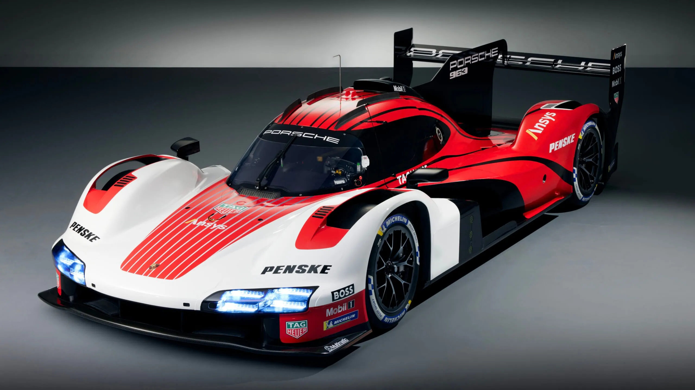
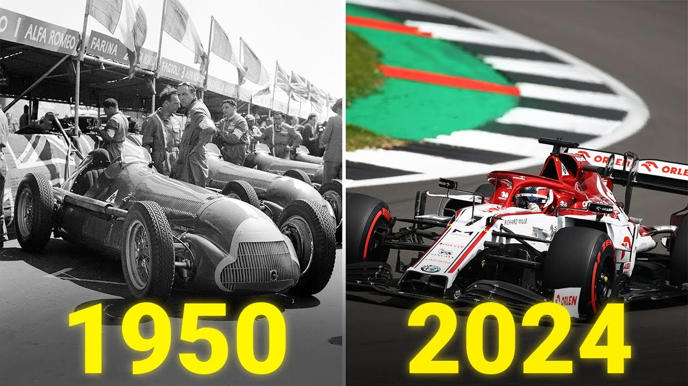
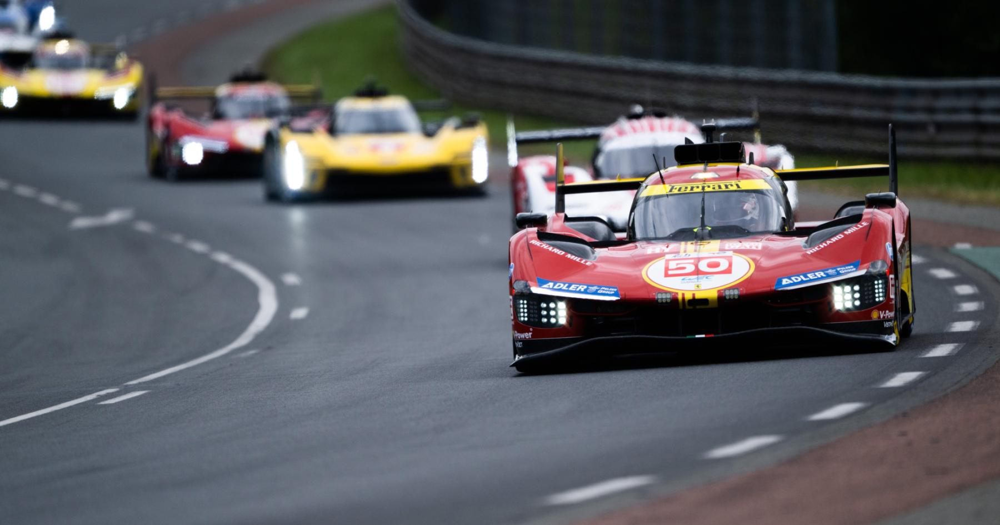
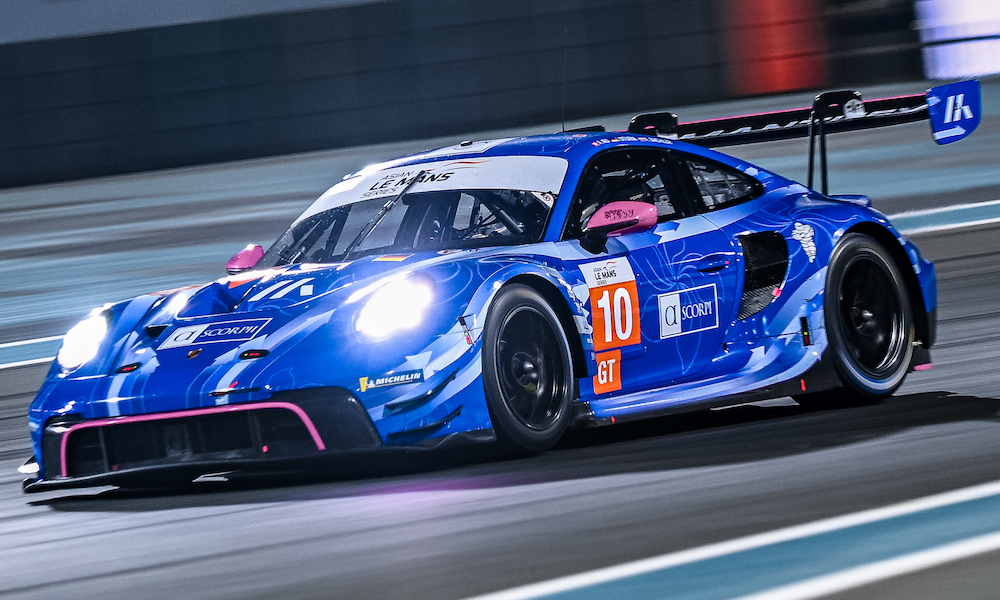

Вижте и научете всичко за състезанията на писта
Пистовите състезания се провеждат на специално изградени тракове, които предлагат една от най-големите скорости и емоции за състезателите и зрителите. В тях автомобилите преминават през точно определени завои и прави участъци, като целта е да се премине най-бързо през трасето. Тези състезания се провеждат на затворени писти, което намалява риска от инциденти в сравнение с публичните пътища.
Въпреки че пистовите състезания не включват преодоляване на различни терени, те изискват изключителни умения за управление на високи скорости и маневриране в динамични условия. Автомобилите се настройват така, че да бъдат максимално бързи, като същевременно трябва да запазват стабилност при високи скорости в завоите.
Пистовите състезания имат дълга и богата история, като започват още в началото на 20-ти век. Един от най-известните примери е Формула 1, която съществува още от 1950 година. Състезания като 24-те часа на Льо Ман и Гран При на Монако са сред най-престижните в света на моторните спортове. През годините тези състезания са претърпели значителни промени в технологията, както и в нивото на конкуренция.
През 1950 г. е създадено състезанието Формула 1, което бързо се утвърдило като най-престижната пистова надпревара в света. Състезания като 24-те часа на Льо Ман и 500-те мили на Индианаполис също са били част от изграждането на съвременния свят на моторните спортове.
Най-популярните пистови състезания включват Формула 1, NASCAR, и endurance състезания като 24-те часа на Льо Ман. В тях автомобилите се състезават на различни видове тракове, от високоскоростни прави участъци до завои, които поставят шофьорите под сериозно изпитание.
Формула 1 е символ на високоскоростните състезания, докато NASCAR се характеризира с плоски и широки писти, които поставят акцент върху контролиране на високата скорост. 24-те часа на Льо Ман са издръжливостно състезание, което поставя на изпитание както автомобилите, така и състезателите за продължителността на цялото състезание.
Днес пистовите състезания са напълно професионализирани, с огромни бюджети и глобално внимание. Формула 1 привлича хиляди зрители на живо и милиони телевизионни зрители по целия свят. Технологиите в автомобилите се развиват постоянно, като включват хибридни двигатели, аеродинамични подобрения и нови материали за намаляване на теглото.
Напредъкът в технологията води до значително подобряване на безопасността, като новите автомобили са оборудвани с активни и пасивни системи за защита на състезателите. Все повече се въвеждат хибридни и електрически технологии, които променят изцяло автомобилите в пистовите състезания.
Формула 1 е най-престижният шампионат в моторните спортове. Известна с високите скорости, иновациите и стратегическата дълбочина, тя привлича глобална публика и е връх на инженерното съвършенство.
Официален сайтNASCAR е американски състезателен шампионат, фокусиран върху овални писти. Известен е със зрелищни сблъсъци, издръжливост и огромни фен-бази в САЩ.
Официален сайт24-те часа на Льо Ман е най-известното издръжливостно състезание, което тества границите на автомобилите и състезателите. Провежда се във Франция от 1923 г.
Официален сайтMotoGP е най-високото ниво в състезанията с мотоциклети, съчетаващо скорост, техника и опасност. Състезанията са динамични и често се решават в последната обиколка.
Официален сайт